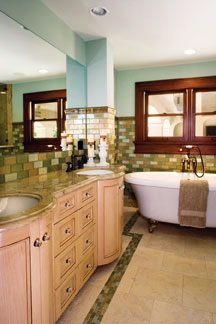

OCEANSIDE GLASSTILE
You can use tile for floors, walls, backsplashes and even countertops. Tile is low-maintenance and doesn’t release chemicals into the air in your house. When you select tiles made from recycled materials, you’re making a great green choice for your home.